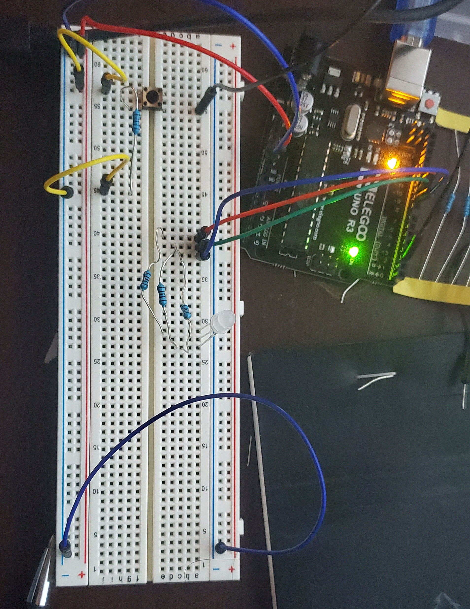
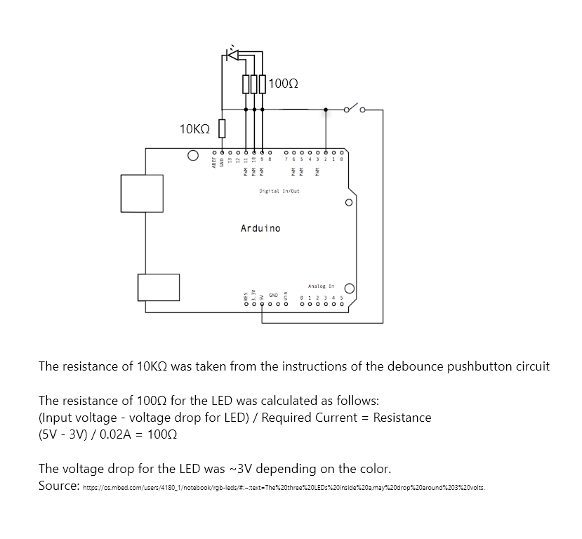

Arduino Rainbow Light

Schematic
Code
//modified from Debounce code @ http://www.arduino.cc/en/Tutorial/Debounce
// constants won't change. They're used here to set pin numbers:
const int buttonPin = 2; // the number of the pushbutton pin
const int red = 11; // the number of the red LED pin
const int green = 10; // the number of the green LED pin
const int blue = 9; // the number of the blue LED pin
// Variables will change:
int buttonState; // the current reading from the input pin
int lastButtonState = LOW; // the previous reading from the input pin
// the following variables are unsigned longs because the time, measured in
// milliseconds, will quickly become a bigger number than can be stored in an int.
unsigned long lastDebounceTime = 0; // the last time the output pin was toggled
unsigned long debounceDelay = 50; // the debounce time; increase if the output flickers
void setup() {
pinMode(buttonPin, INPUT);
pinMode(red, OUTPUT);
pinMode(green, OUTPUT);
pinMode(blue, OUTPUT);
analogWrite(red, 0);
analogWrite(green, 0);
analogWrite(blue, 0);
}
void loop() {
// read the state of the switch into a local variable:
int reading = digitalRead(buttonPin);
// check to see if you just pressed the button
// (i.e. the input went from LOW to HIGH), and you've waited long enough
// since the last press to ignore any noise:
// If the switch changed, due to noise or pressing:
if (reading != lastButtonState) {
// reset the debouncing timer
lastDebounceTime = millis();
}
if ((millis() - lastDebounceTime) > debounceDelay) {
// whatever the reading is at, it's been there for longer than the debounce
// delay, so take it as the actual current state:
// if the button state has changed:
if (reading != buttonState) {
buttonState = reading;
// only toggle the LED if the new button state is HIGH
if (buttonState == HIGH) {
rainbow();
} else {
analogWrite(red, 0);
analogWrite(green, 0);
analogWrite(blue, 0);
}
}
}
// save the reading. Next time through the loop, it'll be the lastButtonState:
lastButtonState = reading;
}
void rainbow() {
//fade in
for (int i = 0; i <= 255; i++) {
analogWrite(red, i);
delay(10);
}
//red
analogWrite(red, 255);
analogWrite(green, 0);
analogWrite(blue, 0);
delay(3000);
//orange
analogWrite(red, 255);
analogWrite(green, 70);
analogWrite(blue, 0);
delay(3000);
//yellow
analogWrite(red, 255);
analogWrite(green, 255);
analogWrite(blue, 0);
delay(3000);
//green
analogWrite(red, 0);
analogWrite(green, 255);
analogWrite(blue, 0);
delay(3000);
//blue
analogWrite(red, 0);
analogWrite(green, 0);
analogWrite(blue, 255);
delay(3000);
//indigo
analogWrite(red, 50);
analogWrite(green, 0);
analogWrite(blue, 100);
delay(3000);
//violet
analogWrite(red, 140);
analogWrite(green, 0);
analogWrite(blue, 255);
delay(3000);
//fade out
for (int i = 1; i <= 10; i++) {
analogWrite(red, 140 - (i * 14));
analogWrite(red, 240 - (i * 24));
delay(400);
}
}
Result